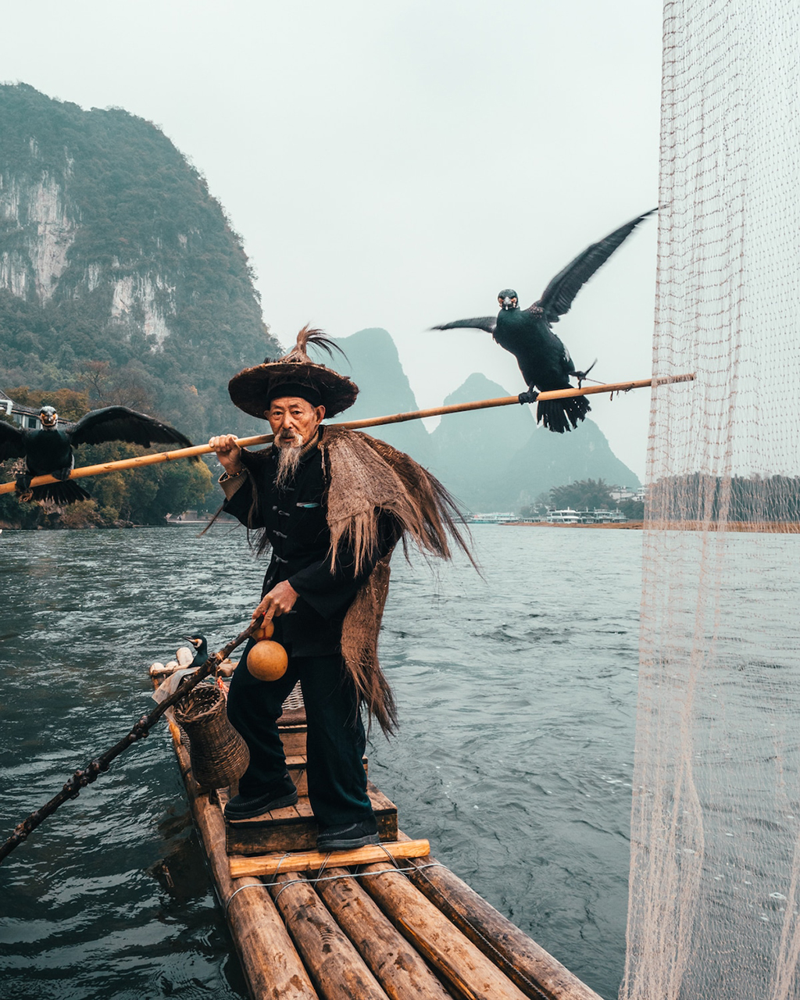
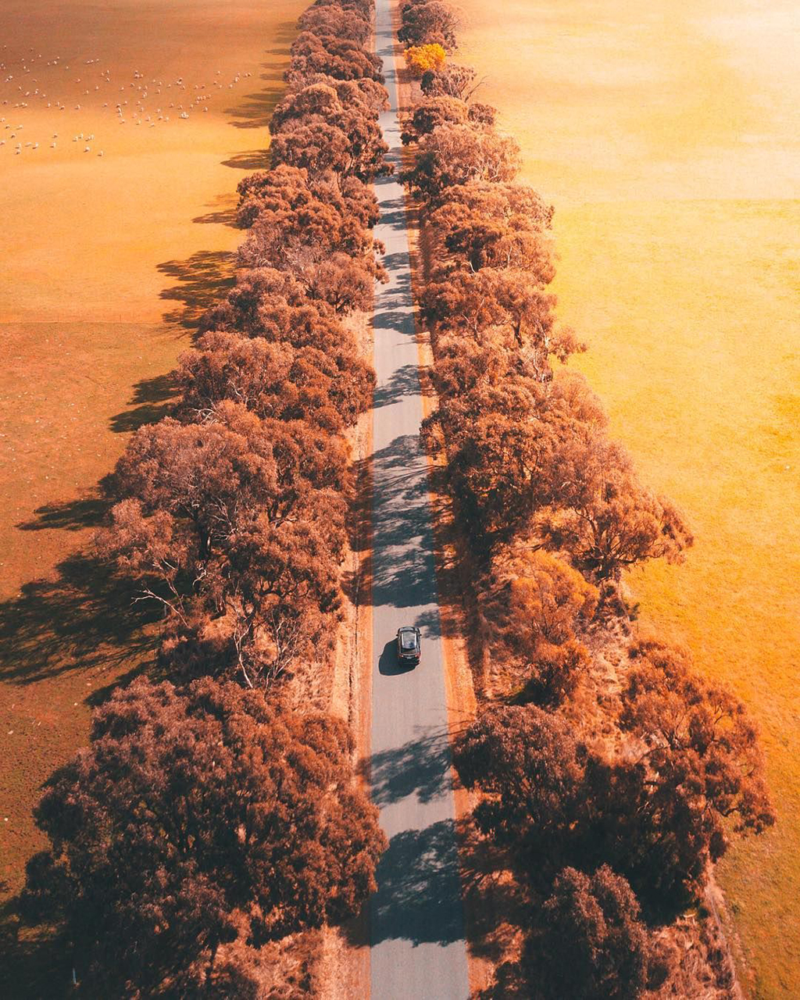
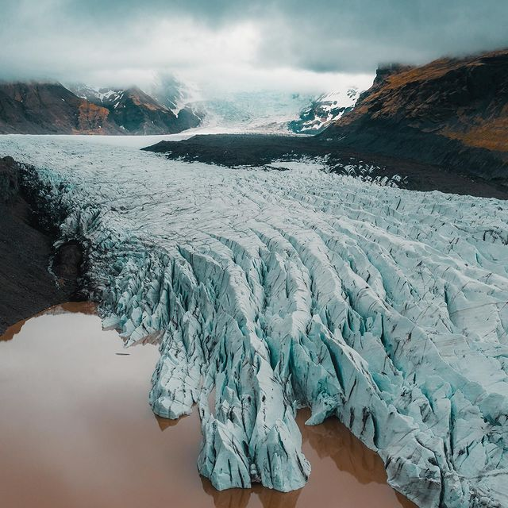

@yantastic What’s your favourite colour? ##melbourne ##photographer ##australia
♬ Experience (Piano e Violin) - Pietro Scichilone
@yantastic Wait for it… ##iceland ##travel ##tiktokphotographer
♬ Experience (Piano e Violin) - Pietro Scichilone